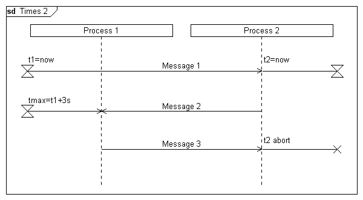

Syntax
Parameters
Syntax
Parameters
 instanceid
text (optional)
orientation (optional)
instanceid
text (optional)
orientation (optional)
| Value | Description |
|---|---|
| l | The measurement will be displayed to the left of the lifeline |
| r | The measurement will be displayed to the right of the lifeline |
Example
|
DiagramName: Times 2 DiagramStyle: uml PageSize: 600,auto PageMargins: 10,10,10,10 process: p1, "Process 1",,20 process: p2, "Process 2",,0,20 settimer: p1, t1=now settimer: p2, t2=now, r msg: p1, p2, Message 1; ; msg: p2, p1, Message 2 timeout: p1, tmax=t1+3s; ; msg: p1, p2, Message 3 stoptimer: p2, t2 abort, r; |
 |
See also